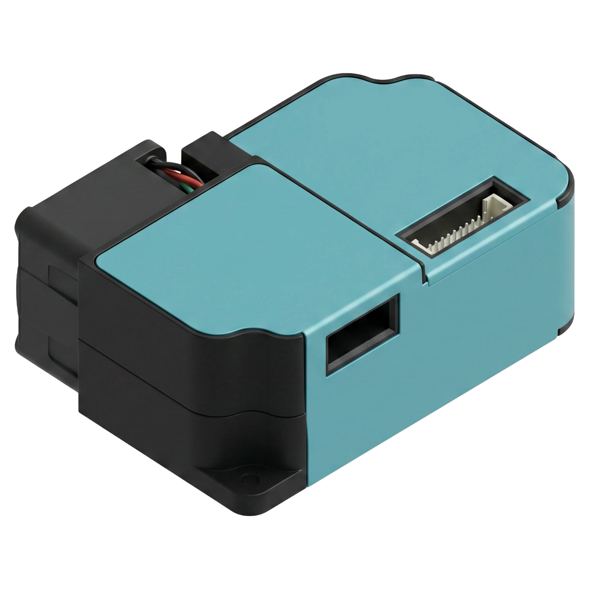
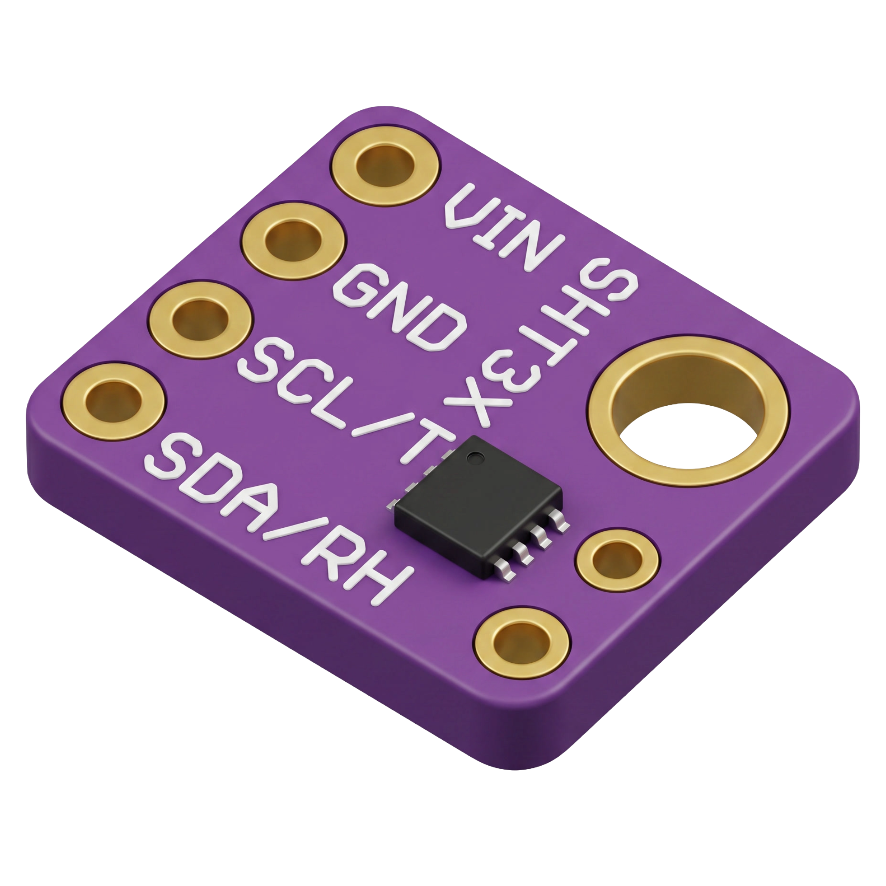
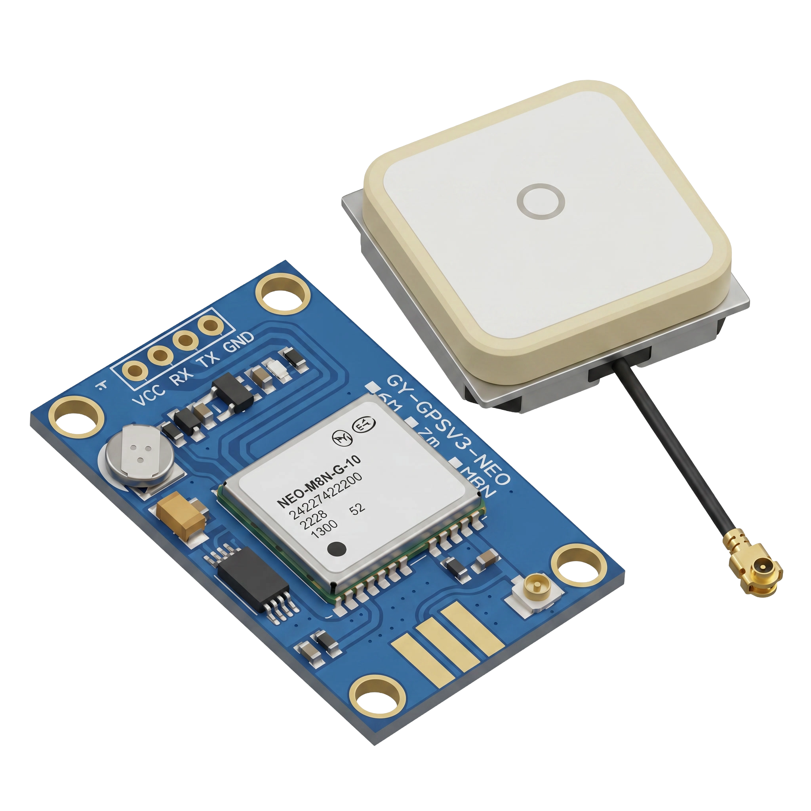

Memetakan Kualitas Udara PM2.5 di Kampus Unpad Jatinangor
AEROMAP mengubah data 32 titik sensor tersebar di kampus menjadi peta interpolasi spasial interaktif, membantu sivitas akademika memahami dan menghindari paparan polusi udara secara real-time.
Mengapa PM2.5 Perlu Dipantau di Kampus?
PM2.5 adalah partikel polutan berukuran ≤2.5 mikrometer yang cukup kecil untuk menembus jauh ke dalam saluran pernapasan dan aliran darah. Aktivitas kampus yang padat, lalu lintas kendaraan di jalur sekitar, dan kondisi topografi Jatinangor membuat distribusi PM2.5 tidak merata di seluruh area kampus.
AEROMAP lahir dari kebutuhan untuk memvisualisasikan sebaran PM2.5 secara spasial, bukan hanya sebagai angka tunggal dari satu titik pengukuran. Dengan 32 sensor yang tersebar di seluruh kampus Unpad Jatinangor, data mentah diinterpolasi menggunakan metode Inverse Distance Weighting (IDW) untuk menghasilkan peta gradasi kualitas udara yang kontinu.
Hasilnya adalah dashboard interaktif yang menampilkan heatmap, garis kontur, tren historis, hingga rekomendasi jalur yang meminimalkan paparan polusi bagi pejalan kaki di area kampus.


Fitur yang Ditawarkan
Dashboard AEROMAP dirancang untuk memberikan gambaran menyeluruh dari data mentah hingga rekomendasi tindakan.
Heatmap Spasial Interaktif
Visualisasi gradasi PM2.5 di seluruh area kampus berbasis interpolasi IDW dari 32 titik sensor.
Tren Historis PM2.5
Grafik perkembangan konsentrasi PM2.5, suhu, dan kelembapan dari waktu ke waktu.
Peringatan Ambang Batas
Notifikasi otomatis saat PM2.5 melewati ambang batas aman ISPU di titik pemantauan utama.
Rekomendasi Jalur Aman
Menyarankan jalur berjalan kaki antar titik dengan paparan PM2.5 rata-rata paling rendah.
Ekspor Data & Laporan
Unduh data mentah dalam format CSV atau cetak laporan ringkasan dalam format PDF.
Pemantauan Real-Time
Status LIVE dari sensor utama dengan pembaruan berkala tanpa perlu memuat ulang halaman.
Model Prototype Node Sensor
Pratinjau bentuk fisik node sensor AEROMAP. Klik dan seret (drag) gambar untuk memutar sudut pandang secara bebas.
Enclosure Node Sensor v1
Prototype node dikemas dalam enclosure tahan cuaca dengan panel surya di bagian atas untuk catu daya mandiri, layar indikator status, serta port akses untuk kalibrasi lapangan.
Arsitektur Perangkat Sensor
Setiap node sensor dirancang ringkas dan hemat daya agar dapat ditempatkan tersebar di 32 titik kampus tanpa memerlukan infrastruktur kabel yang rumit.
- SensorLaser PM2.5 (optical scattering)
- MikrokontrolerESP32 (WiFi + BLE)
- Catu DayaBaterai Li-ion + panel surya kecil
- Interval PengirimanBerkala (menit)
- Protokol KomunikasiWiFi / MQTT
- Jumlah Node Terpasang32 titik sebaran kampus
- CasingEnclosure tahan cuaca outdoor
Teknologi yang Digunakan
Kombinasi hardware embedded, pipeline data science, dan frontend interaktif untuk mengubah sinyal sensor mentah menjadi peta kualitas udara yang dapat ditindaklanjuti.
ESP32 + Sensor PM2.5
Node akuisisi data di tiap titik sampling, membaca konsentrasi partikulat dan mengirim data secara berkala.
Embedded / IoTPython + Google Colab
Pipeline pengolahan data: interpolasi IDW, smoothing, clipping, dan generasi heatmap/kontur dari 32 titik sensor.
NumPy · SciPy · PandasFolium + Leaflet
Rendering peta interaktif berbasis tile OpenStreetMap dengan layer heatmap raster dan kontur GeoJSON.
Geospatial VisualizationHTML / JS / Chart.js
Dashboard frontend single-file dengan grafik tren real-time, kartu ringkasan, dan ekspor laporan.
FrontendTim Pengembang
Proyek ini dikembangkan oleh 3 anggota mahasiswa di bawah bimbingan 1 dosen pembimbing.
Nama Anggota 1
Pengembangan sistem akuisisi data & embedded hardware.
Nama Anggota 2
Pipeline interpolasi spasial & pengolahan data PM2.5.
Nama Anggota 3
Desain & pengembangan dashboard interaktif.
Nama Dosen Pembimbing
Membimbing arah riset & validasi metodologi.